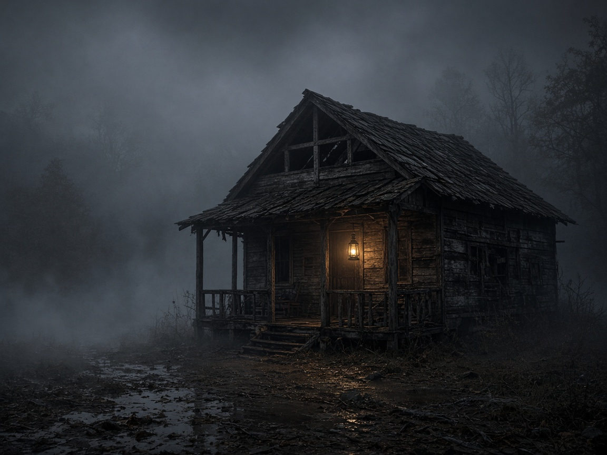
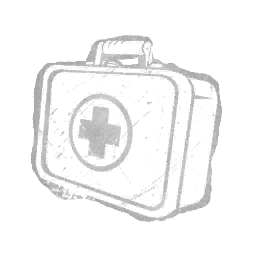

SURVIVANT / OBJECTIF
Gen-Rush Rapide
Fait pour réparer les générateurs le plus vite possible sans perdre de temps.
DV Déjà Vu
PT Prouve-toi
RS Résilience
LI Lien
Bienvenue sur le Guide DBD. Que vous soyez Survivant tentant d'échapper à la mort ou Tueur traquant vos proies, découvrez toutes les bases pour triompher dans l'arène.
Cliquez sur un camp pour voir sa stratégie et ses conseils clés.
Votre but est de réparer 5 générateurs avec vos 3 coéquipiers, d'alimenter les portes de sortie et de vous échapper vivants sans vous faire capturer par le Tueur.

Scrollez vers le bas pour faire progresser la traque et réparer le générateur.
Évitez les corbeaux et travaillez discrètement.
Le Tueur approche : gagnez de précieuses secondes.
Activez le levier final et franchissez la ligne d'échappée.
Attrapez un objet avec votre souris (ou au doigt sur mobile) et glissez-le dans votre sacoche de survie.
Objets disponibles (glissez-les) :

Boîte à Outils Répare 30% plus vite
Trousse de Soin Auto-soin d'urgenceDéposez votre objet favori ici pour la partie.
Une sélection de compétences éprouvées pour débuter et progresser.
Fait pour réparer les générateurs le plus vite possible sans perdre de temps.
Permet d'enchaîner les palettes et fenêtres pour faire perdre du temps au tueur.
Ralentit la progression des survivants et donne des informations sur leurs positions.